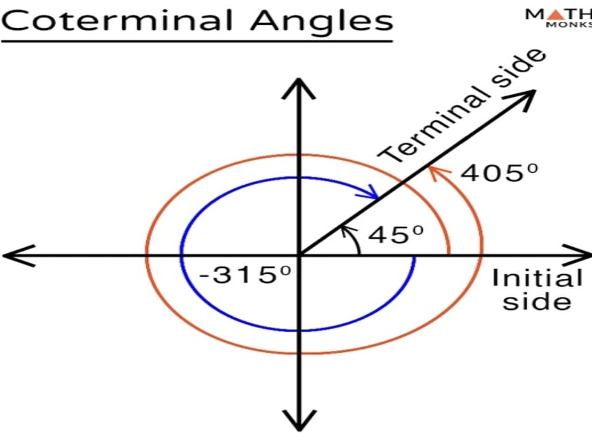
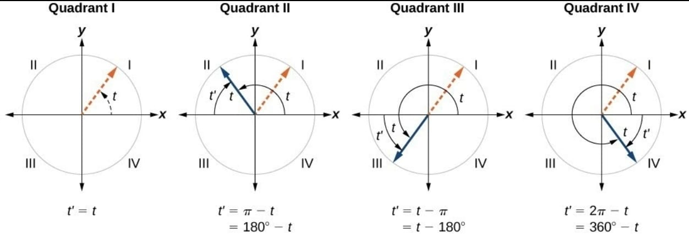
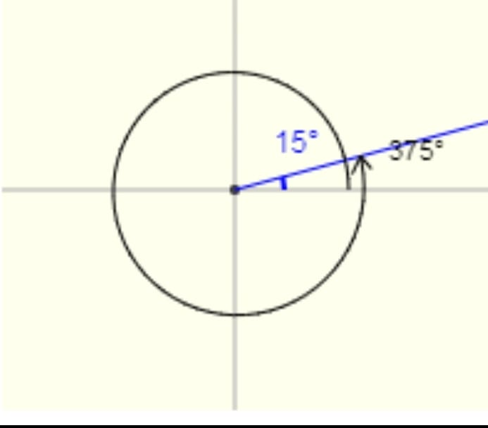

Coterminal Angles:
Coterminal Angles are the angles that have the same initial side and share the terminal sides.
The coterminal angles occupy the standard position,
though their values are different.

Example: Find the positive and negative Coterminal of 40°.
40° + 360° = 400° 40° - 360° = -320°
Reference Angle:
It is the acute angle formed between the terminal side of the angle and the x-axis
when the angle is in standard position.

Example: Find the positive Reference Angle of 15° in Quadrant I.
15° + 360° = 375°
